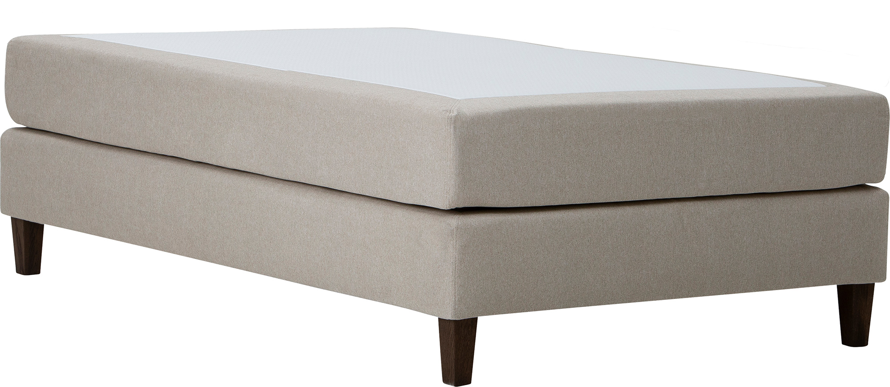
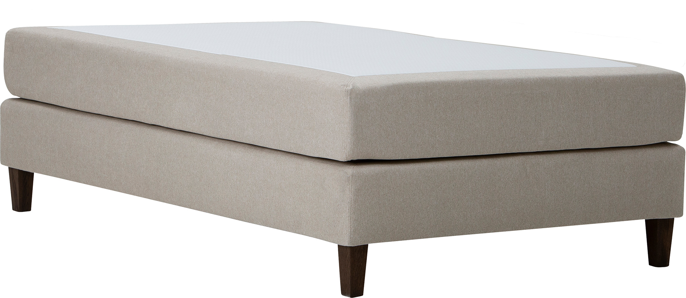

Moon Gold continental bed 120x200, pocket 7-zone. Primo 05 beige
197717
 

Description
Experience timeless elegance and supreme comfort with the Moon Gold continental bed, sized 120x200 cm. Designed for versatile and restful sleep, this bed is part of the exclusive NEST & LIVING collection, emphasizing quality and value.
Available in the Gold tier, this continental bed features a durable frame crafted from solid wood and particleboard, finished with classic Primo 05 beige upholstery that perfectly complements modern and traditional interiors.
Choose between a supportive 7-zone pocket spring mattress—engineered to provide individualized body support—or an adaptive memory foam comfort option tailored to your sleep preferences. The bed includes conical, 15cm high legs with a smoked ash finish that enhance its light and refined appearance.
For added personalization, the Moon Gold continental bed can be optionally equipped with various mattress toppers and headboards, allowing you to tailor your sleeping environment according to your needs. This model comes without a mattress topper or headboard by default.
The bed is accompanied by an impressive 4000-day quality guarantee, underscoring its durability and craftsmanship. Maintenance is straightforward: simply vacuum and wipe the upholstery with a damp cloth to keep it looking pristine.
Elevate your bedroom with the Moon Gold continental bed—a perfect blend of style, comfort, and lasting quality from the NEST & LIVING collection.
Technical specifications
| Size | 120 × 200 cm |
|---|---|
| Color | Beige (Primo 05) |
| Comfort tier | Gold |
| Spring system | 7-zone pocket spring |
| Top mattress | Without mattress topper |
| Headboard | Not included (optional accessory) |
| Frame material | Durable wood and particleboard |
| Legs | Conical 15 cm smoked ash-colored wooden legs |
| Warranty | 4000-day quality guarantee |